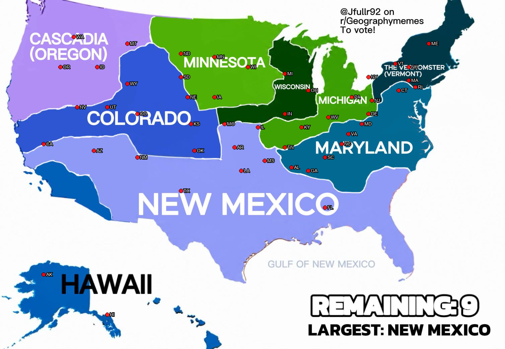

Sample-point overlay — image-based ground truth
Each red dot marks the pixel where we sampled the round-42 image to determine that state's final empire (via nearest empire-color anchor). This is the "image ground truth" that drives the merger-tree composition below: each state is assigned to the empire whose color it visually sits in on the OP's final map.

Surviving empires — final ranking
| Empire | States | Population | Land (mi²) | GDP | GDP/capita | Bachelor's+ |
|---|---|---|---|---|---|---|
| New Mexico (Gulf of New Mexico) root: New Mexico |
12 | 103,344,569 | 978,640 | $7,952,059M | $76,947 | 31.6% |
| Colorado root: Colorado |
6 | 55,202,898 | 630,224 | $5,225,591M | $94,662 | 36.9% |
| Great Maryland Empire root: Maryland |
7 | 46,152,794 | 198,606 | $3,563,089M | $77,202 | 37.0% |
| Michigan root: Michigan |
5 | 45,980,651 | 228,231 | $3,422,899M | $74,442 | 32.2% |
| The Vermomster root: Vermont |
8 | 44,606,448 | 117,169 | $4,541,136M | $101,804 | 41.9% |
| Cascadia root: Oregon |
4 | 14,865,868 | 390,633 | $1,336,845M | $89,927 | 38.1% |
| Minnesota root: Minnesota |
5 | 12,524,128 | 357,120 | $1,082,936M | $86,468 | 35.2% |
| Wisconsin root: Wisconsin |
1 | 5,893,718 | 54,158 | $428,049M | $72,628 | 32.7% |
| Hawaii root: Hawaii |
2 | 2,188,662 | 577,064 | $173,647M | $79,339 | 34.1% |
Merger trees
Each tree shows how a surviving empire grew. Children are listed in absorption order with round number.
New Mexico (Gulf of New Mexico)
- root New Mexico (self 2,117,522; subtree 103,344,569 across 12 states)
- #15 Missouri (self 6,154,913; subtree 9,166,437 across 2 states)
- #9 Arkansas (3,011,524)
- #19 Oklahoma (self 3,959,353; subtree 33,104,858 across 2 states)
- #4 Texas (29,145,505)
- #27 Louisiana (self 4,657,757; subtree 7,619,036 across 2 states)
- #16 Mississippi (2,961,279)
- #30 Georgia (self 10,711,908; subtree 44,185,214 across 4 states)
- #2 Florida (21,538,187)
- #28 Tennessee (self 6,910,840; subtree 11,935,119 across 2 states)
- #14 Alabama (5,024,279)
- #33 Arizona (7,151,502)
- #15 Missouri (self 6,154,913; subtree 9,166,437 across 2 states)
Colorado
- root Colorado (self 5,773,714; subtree 55,202,898 across 6 states)
- #22 Utah (3,271,616)
- #24 Wyoming (576,851)
- #31 Nevada (3,104,614)
- #38 Kansas (2,937,880)
- #40 California (39,538,223)
Great Maryland Empire
- root Maryland (self 6,177,224; subtree 46,152,794 across 7 states)
- #20 Delaware (989,948)
- #32 North Carolina (self 10,439,388; subtree 15,557,813 across 2 states)
- #8 South Carolina (5,118,425)
- #34 Virginia (self 8,631,393; subtree 10,425,109 across 2 states)
- #6 West Virginia (1,793,716)
- #42 Pennsylvania (13,002,700)
Michigan
- root Michigan (self 10,077,331; subtree 45,980,651 across 5 states)
- #10 Ohio (11,799,448)
- #17 Indiana (6,785,528)
- #26 Kentucky (4,505,836)
- #41 Illinois (12,812,508)
The Vermomster
- root Vermont (self 643,077; subtree 44,606,448 across 8 states)
- #18 New Hampshire (1,377,529)
- #29 Maine (1,362,359)
- #35 New York (self 20,201,249; subtree 29,490,243 across 2 states)
- #13 New Jersey (9,288,994)
- #37 Massachusetts (self 7,029,917; subtree 11,733,240 across 3 states)
- #11 Rhode Island (1,097,379)
- #23 Connecticut (3,605,944)
Cascadia
- root Oregon (self 4,237,256; subtree 14,865,868 across 4 states)
- #3 Idaho (1,839,106)
- #36 Washington (7,705,281)
- #39 Montana (1,084,225)
Minnesota
- root Minnesota (self 5,706,494; subtree 12,524,128 across 5 states)
- #12 North Dakota (self 779,094; subtree 1,665,761 across 2 states)
- #5 South Dakota (886,667)
- #25 Iowa (self 3,190,369; subtree 5,151,873 across 2 states)
- #7 Nebraska (1,961,504)
- #12 North Dakota (self 779,094; subtree 1,665,761 across 2 states)
Wisconsin
- root Wisconsin (5,893,718)
Hawaii
- root Hawaii (self 1,455,271; subtree 2,188,662 across 2 states)
- #21 Alaska (733,391)